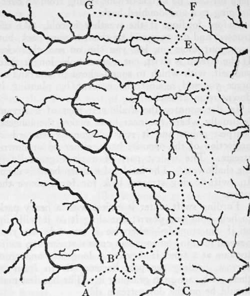

Pathfinding. Part 3
Description
This section is from the book "Camping And Woodcraft", by Horace Kephart. Also available from Amazon: Camping and Woodcraft.
Pathfinding. Part 3
An old "lumber works," where the trees have been chopped out, leaving nothing but stumps, tree-tops, and other debris, grows up with the same rank tenants as a burnt-wood, and is as mean to flounder through. As a general rule, a mile and a half an hour of actual progress is "making good time" in the woods.
Crossing Streams
If you have to cross a deep, rocky ravine or dangerous mountain stream by passing over a high foot-log or fallen tree, then, if the log is tilted at an uncomfortable angle, or if its surface is wet, or icy, or treacherous with loose bark, or if, for any reason, you fear dizziness or faintness, don't be ashamed to get down and straddle the log, and "coon it," hunching yourself along with hands and thighs. Let your companions laugh, if they will. It is not nice to break a limb when you are in a country so rough that your comrades may have to pack you out, by each, in turn, carrying you on his own back and crawling with you.
Where there is no foot-log, a narrow stream may be crossed by using a jumping-pole, or> if it is too deep for that, by a rope or vine swung from an overhanging tree and doubled back.
Before fording, if the weather is cold, take off trousers and drawers and tie them to your pack, but keep your shoes on, lest you slip on smooth rocks. If the stream is swift, cut a stout pole, longer than yourself, with which to sound ahead of you and to brace yourself against the current by planting it downstream at each step.
In flat country the shallowest part of a stream is usually where the near bank makes the longest, sharpest point, and it runs diagonally towrard a projection of the opposite bank, either up or downstream. The widest part of a river generally is the shallowest. The inside of a sharp bend is deep. In swift-flowing streams look for fords above the riffles.
Fording swift water is easiest with a heavy pack to help hold one down; but sling it so it will slip off if you stumble—otherwise it may drown you. Several men in company can cross a stream too swift for one at a time, if they cut a long pole and cross abreast, holding the pole horizontally in front of them with each man grasping it. The heaviest man should be on the downstream side.
To avoid mud and quicksand, look for pebbles on the bottom.
Use Of Divides
Rivers are often spoken of a< having been man's natural highways in the days before roads. This was true only to a limited extent. A few great rivers such as the Hudson, the Ohio, the Mississippi, and the Missouri, were highways for down-stream travel, and smaller waterways were, and still are, used in summer in the muskeg country of the North, where land travel is impracticable until everything freezes up. But the general rule of aboriginal travel was to keep away from streams and follow the ridges between them. This rule still holds good when a party travels afoot or with pack-train in a country where there are no bridges. A glance at the accompanying diagram (Fig. 7) will show why.
Fig. 7. Use of Divides.
In this figure, AG represents a river, and CF the main divide or summit of watershed separating it from another river basin. It is assumed that a party afoot or with horses desires to advance from A to G. Evidently, if they try to follow either bank of the main stream, they will have many fords to make, not only crossing tributaries here and there, but fording or swimming the main stream itself, many times, where cliffs, bogs, or impenetrable thickets make one of the banks impassable.
If the region through which the river runs is wide bottom-land, the mouths of its tributaries are likely to be deep, or to run over fathomless mud as dangerous as quicksand, and this will necessitate long detours. The vegetation up to the very bank of the river will be exceedingly rank, a wretched tangle of bushes, vines, briers, and tall grass, and fallen trees will be plentiful and large. At any time a heavy rainstorm may send the river out of its banks, and the party may find itself marooned where it can neither go forward nor backward. On the other hand, if the river runs through a mountainous country, it is probable that the travelers will come to a canon that will compel them to retreat. In any case, the party will never have an outlook; it will never know what lies beyond the next bend of th* river.
A comparatively easy way around all of these difficulties is shown by the dotted line ABDEG. Leaving the river by a ridge that leads to the main divide, and following the crest to a similar abutting ridge that runs down to the valley at the objective point, there will be no fords to make, the footing will be much better because vegetation is thinner on the more sterile, wind-swept heights, the fallen trees wrill be smaller, there will be no mud or quicksand or miry bogs, and every here and there a coign of vantage will be climbed from which a far outlook can be had over the surrounding country.
The chief precaution to be observed in trying to follow a divide where there is no trail, or where there are many intersecting trails, is not to stray off on some abutting ridge. Thus, at the points B and D there may be in each case a gap between knolls or peaks, and the lead to the left might easily be mistaken for the main divide. If the jcarty were enticed along either of these leads, on account of its trending in the desired direction, it would soon find itself in a cul de sac.
Celestial Guides
The sun by day and the stars by night are Nature's chief guides for the traveler. So long as the sun is visible anyone can tell, in a general way, the direction in which he is going. To find the sun on a cloudy day: hold a knife-blade or other thin, flat article perpendicularly on the thumb-nail, watch-case, or any glossy surface, and slowly twirl it around. It will cast a faint shadow, unless the day is very dark. Choose an open spot in the woods for this, rather than under the trees, and don't try it near noon, when little shadow would be cast anyway.
How to find the North Star is shown at the end of Chapter V.
Continue to:
- prev: Pathfinding. Part 2
- Table of Contents
- next: Chapter IV. Nature's Guide. Posts. Sameness Of The Forest